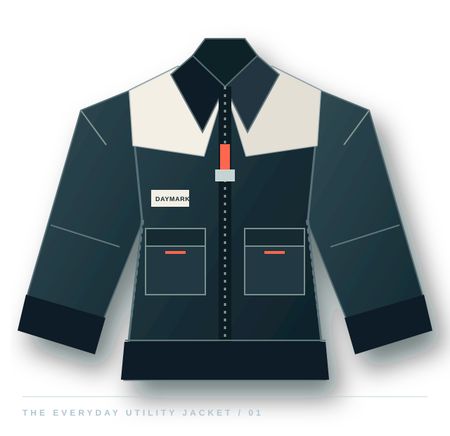
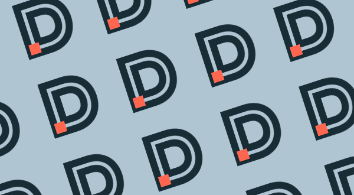
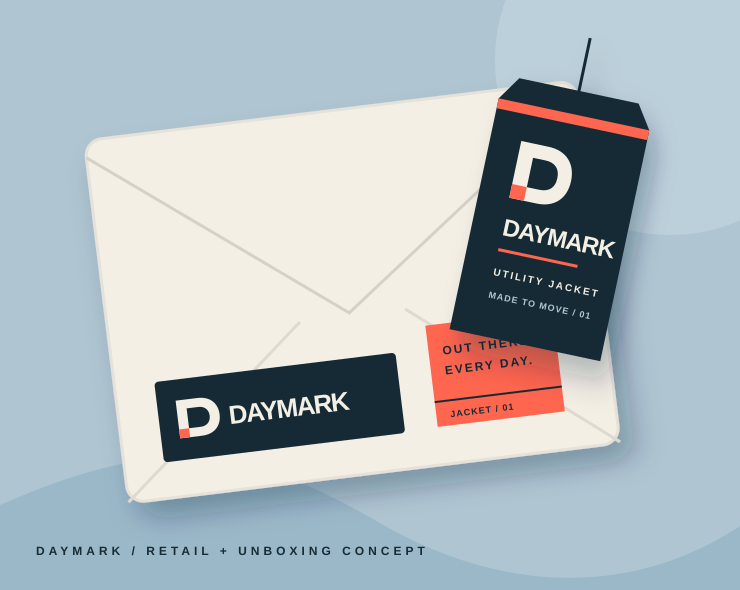
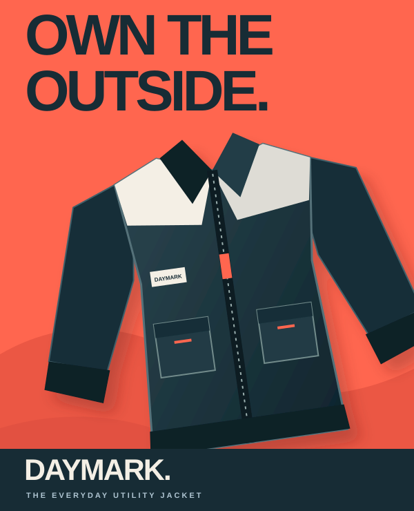

Branding / Sample project / 2026
DAYMARK made to move
A complete identity concept for accessible jackets made for the everyday outside.
OWN THE
OUTSIDE.

01 / BRAND WORLD01 / The idea
A layer for
whatever's next.
DAYMARK makes outerwear feel considered and reachable. The identity takes cues from useful details—panels, seams and labels—then gives them a confident, modern edge.
The name connects daily movement with leaving your mark. A stepped “D” suggests forward motion; its coral square becomes the signature detail on jackets, hangtags and campaign art.
02 / Identity
A mark made
to move.
The compact symbol works on a woven chest label; the wordmark has presence at retail distance.
03 / Visual system
Built from the details.
Technical neutrals give the brand its sense of utility. One vivid accent keeps it energetic and easy to spot.
Colour
Ink and stone lead. Coral marks the focal point. Storm blue brings a modern outdoor tone.
Type & voice
Bold, decisive headlines. Poppins keeps product facts and retail information calm and clear.
Signature graphic
One detail.
Repeated with purpose.
The stepped D becomes a flexible repeat for garment lining, mailers and digital backgrounds.

04 / On the shelf
Designed to stand out.
A structured hangtag, woven label and printed mailer carry the identity from store rail to doorstep.


The complete kit
Everyday, with intention.
DAYMARK is a self-initiated sample project created for this portfolio. The concept includes naming, positioning, visual identity, colour, typography, pattern, retail packaging and campaign art.